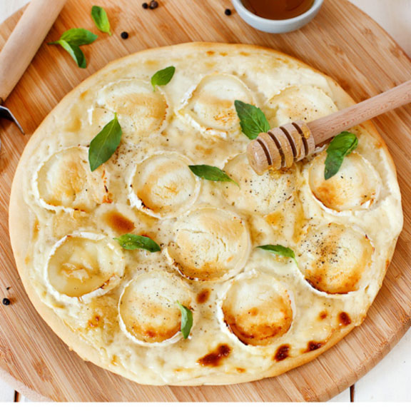

Pizza Chèvre Miel

Description : Une pizza à la crème trop cool
Ingrédients
- 1 Bûche de chèvre
- 1 pâte à pizza
- Miel
- Crème fraîche épaisse
- Basilic
- étalez la pâte et couvrez-la de crème fraîche épaisse
- Découpez le fromage de chèvre en rondelles et disposez les sur la crème fraîche
Parsemez la pizza de deux cuillères à soupe de miel et finissez par une pincée de basilic !
- Mettez au four pendant 15 à 20 minutes